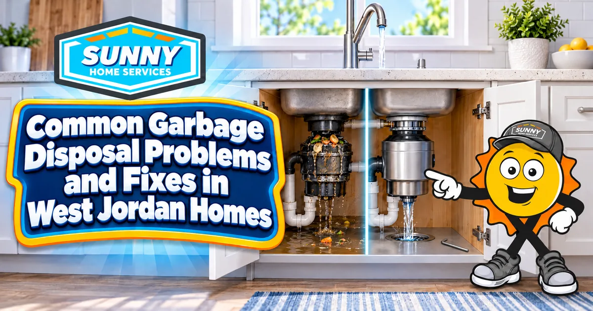

385.853.8116

Garbage disposals can be a big help when it’s time to do the dishes, but these systems aren’t immune to issues over time. As experienced West Jordan plumbers with decades of combined experience in the Wasatch Front, we’ve seen and repaired all kinds of garbage disposal problems, ranging from minor annoyances to serious concerns. Let’s look at common garbage disposal issues, what they mean, and how to fix them.
Garbage disposals can develop a range of issues over time, from minor problems like an unpleasant smell wafting up from your drain to more serious problems, such as a water leak under your sink. Here are a few common garbage disposal problems and fixes to try before you call a plumbing repair pro.
One of the most common garbage disposal issues is a jammed unit. Here’s what you need to know:
When you flip the switch, you hear a humming noise, but the unit doesn’t make any other noise because the motor is locked in place.
Hard objects (e.g., bones, fruit pits, glass, dish fragments), too much fibrous material (e.g., celery, corn husks), or overloading the garbage disposal.
Turn off the unit and try to remove visible debris with tongs or pliers (never your hands). Use an Allen wrench on the bottom of the unit to turn the impellers back and forth and free them. Then press the reset button to get the motor moving again.
A completely dead garbage disposal may not be as serious as it seems.
You hear no sound or see any movement when you flip the garbage disposal switch.
Tripped safety reset button, tripped circuit breaker, or an issue with the power supply.
Press the reset button on the bottom of the unit, check your circuit panel for tripped breakers and flip them back on, and check the outlet that the unit is plugged into to confirm it has power.
Fixing a leaking garbage disposal prevents damage to your cabinets and floors and helps you stop hazardous mold growth in your kitchen.
Water pooling or dripping underneath your sink.
A loose sink flange assembly, a worn-out gasket, a loose pipe connection, or a cracked disposal unit body.
Tighten all visible hose clamps and mounting bolts, or replace worn gaskets if you feel confident. If the unit itself is cracked, you can’t repair it.
Slow-moving drains defeat the purpose of a garbage disposal and can lead to serious cleanup problems.
Water pools in the sink or takes a long time to drain, even when you run the garbage disposal.
Disposing of starchy or expanding foods (e.g., rice, pasta, potato peels), excess grease and oil buildup, or a problem with the P-trap under the fixture.
Remove the P-trap and clean it of any solid debris that might be causing the clog. Remove any visible clogs from the garbage disposal (always using tongs or pliers instead of your fingers). Avoid chemical drain cleaners, which can damage your garbage disposal and plumbing. Call a drain cleaning professional if the problem persists.
Nothing ruins a clean kitchen like a foul smell coming from your drain. Diagnose and eliminate unpleasant garbage disposal odors with these tips.
Persistent, unpleasant smell from your kitchen sink drain.
Trapped food in the unit, rancid grease buildup in the disposal or pipes, or bacteria buildup in the baffle or grinding chamber.
Drop ice cubes and citrus peels into the running unit to scour and deodorize the blades, and clean the unit regularly with baking soda and vinegar. If the smell persists, you may need a professional to disassemble and clean it.
Now that you know the basics of diagnosing garbage disposal problems, how do you decide whether to repair or replace it? If the DIY troubleshooting steps resolve your issue and everything seems to be working normally, you don’t need either. If your system is more than eight to 12 years old and has frequent issues, you’ll ultimately save money by investing in a new one. But if the issues are rare and isolated to a newer system, we recommend repairing it as needed.
If you’ve tried troubleshooting a garbage disposal issue yourself without success, it’s worth contacting a plumber to inspect your unit and get their professional recommendation. They can inspect the system, take it apart, clean it, and determine whether it can work again or if you need to replace it. If you need a new system, a professional plumber can install it in just a couple of hours, getting you back to your normal routine sooner.
Not sure where to start? A technician can look at it the same day and tell you what it needs.
Book NowGarbage disposal issues can put your home at risk of damage or even a plumbing emergency. With regular cleaning and maintenance, you can prevent most problems by being careful about what you put down the drain.
Make sure to never put these items down your garbage disposal:
If you’re dealing with a garbage disposal issue, there’s no reason to let it drag on. We can complete most garbage disposal repairs in just a couple of hours, getting your unit running reliably and safely again. Sunny Home Services is your go-to team for any plumbing issues you may be facing in the Wasatch Front, including garbage disposal problems. For more information on diagnosing garbage disposal issues or to schedule a service appointment, contact us.


When you need HVAC and plumbing services along the Wasatch Front, count on Sunny Home Services for fast, honest, technology-driven solutions. With same-day response, upfront flat-rate pricing, and heating, cooling, and plumbing all under one roof, you’ll have a company you can trust for the whole home.